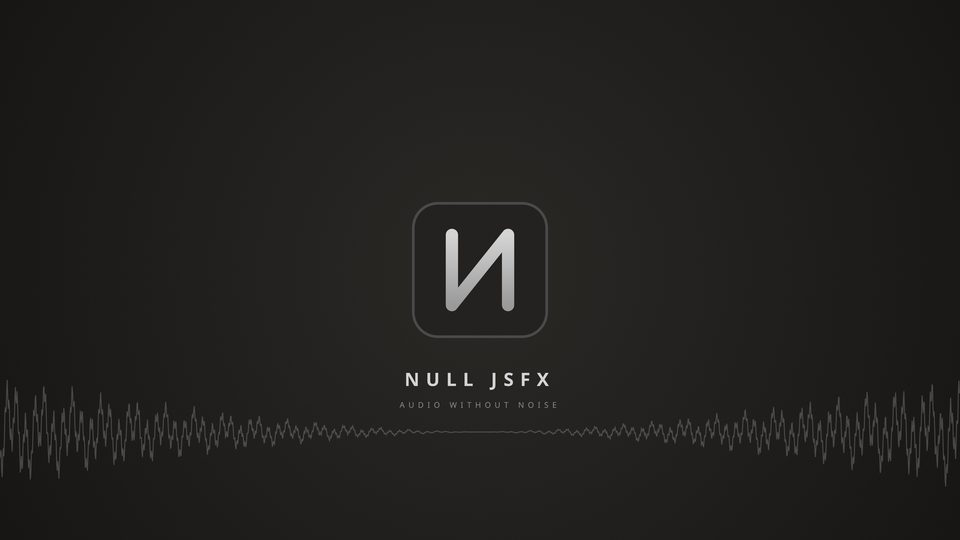
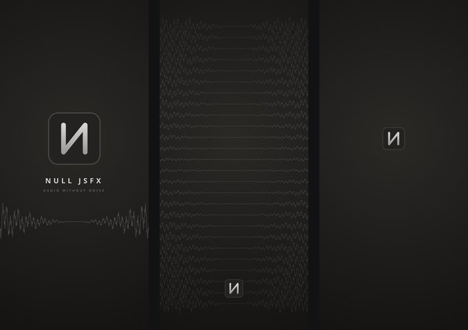
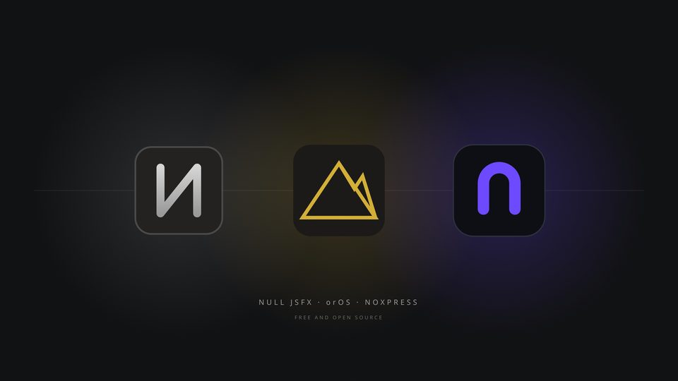
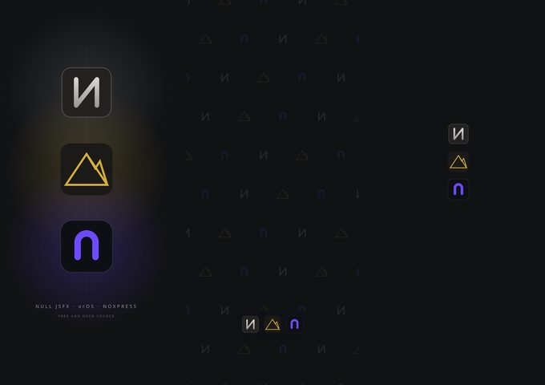

Media kit
Wallpapers for desktop, phone and tablet, logos and icons, banners for social profiles, print files for t-shirts, mugs and stickers, colour palettes, fonts, brand guidelines and press releases in English and Greek. Everything is free to download.
NULL JSFX


NULL JSFX, orOS and Noxpress together


The kits of orOS and Noxpress on their own are on their sites.
Using the kit
Use anything in it to present, review or write about the projects, on screen or in print, and to show
your support (wallpapers, stickers, a t-shirt for yourself). Please don't change the marks, their
colours or their proportions, and don't sell the kit or products made from it. The fonts are under the
SIL Open Font License; LICENSE-media-kit.md in each zip has the details.
For press and interviews: koulaxizis@glarolykoi.net